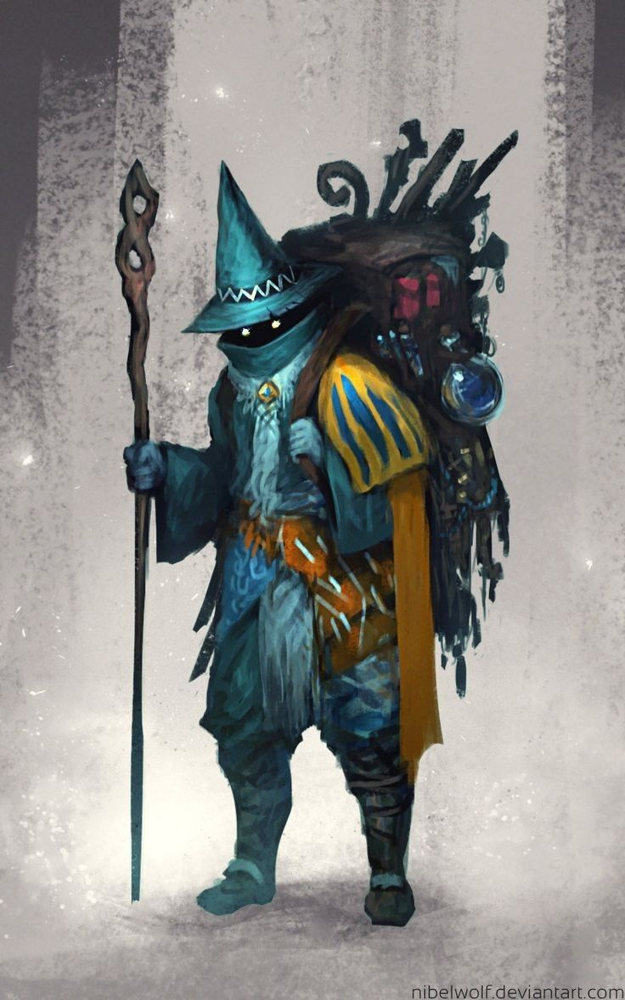

|

O Baú de Perdêncio
Mestre, defina a raridade da sua busca e deixe os deuses rolarem os dados!
Comum
Incomum
Raro
Muito Raro
Lendário
Artefato
Raridade Variável
Perdêncio aguarda sua escolha...
Banco de dados: contando itens...